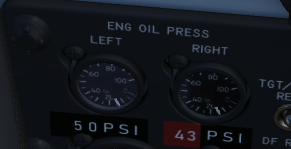
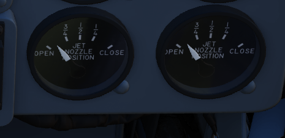
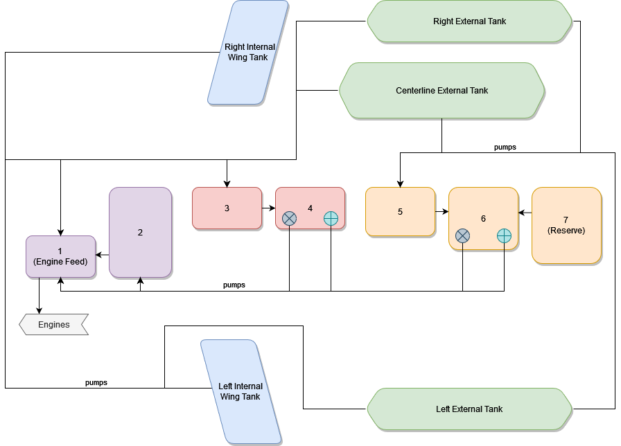
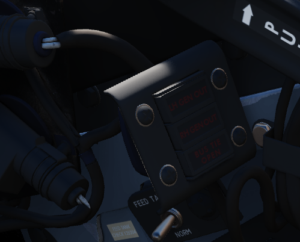

Flight Control Systems
Engines
The F-4E Phantom is powered by two J79-GE-17 engines built by General Electric, with a rated static sea-level power delivery of 11,870 pounds of thrust in Mil, and 17,900 pounds in afterburner. The engines have provision for both assisted pneumatic start at fields with an available cart, or via a propellant cartridge to initiate spinup. Similarly, the engines can utilize the aircraft's internal battery for initial power, or connection with an external power cart.
Fuel Flow Indicators

Each engine has a fuel flow indicator found in the front cockpit instrument panel. The indicators read in thousands of pounds per hour, from 0 to 12. The indicators provide flow rate up to Mil power; when afterburner is engaged, a separate fuel delivery system is used to provide fuel directly to the afterburner stage, and the flow rate is approximately 4 times the value shown.
Oil Pressure Indicators

Oil pressure indicators are on the front cockpit pedestal panel, and are graduated from 0 to 10, and are presented in 10 lb increments.
Variable Duct Ramp
Optimization of air to the engines is performed by a Variable Duct Ramp system directed by the ADC; this optimization uses a pair of variable ramps to decelerate incoming air to subsonic for best engine performance. In the event limits are exceeded for inlet temperature, the Duct Temperature High Indicator Light (DUCT TEMP HI) on the telelight panel will illuminate. Permitting the issue to continue can cause permanent engine damage.
Engine Starting System
Pneumatic Mode Starting
The normal mode for starting the Phantom utilizes an auxiliary start cart that turns the starter turbine, cranking the engine over.
Cartridge Mode Starting
Cartridge mode is supplied for operational and emergency needs. A propellant charge is used to turn the starter turbine, which in turn cranks the engine over to initiate startup.
Start Switch
Used only for cartridge start, selecting L or R ignites the cartridge set for the respective engine.
Engine Ignition System
Engine ignition for startup is performed using a pair of spark plugs on each engine, activated by pressing the Ignition Button found to the front of both throttle levers. The button is depressed as part of the starting sequence to ignite the spark plugs, initiating combustion in chambers four and five of the engines.
Engine Anti-Icing System
Using the Anti-Icing Switch set to DE-ICE, bleed air from stage 17 is distributed to ports installed in the compressor face area of the engines. This system does not perform de-icing functions, but is to be activated prior to ice formation. As high Mach speeds provide enough friction heat to the air stream to deny icing in the compressor stage, usage of the Anti-Icing System is unnecessary and can cause engine damage.
Anti-Ice Indicator Lights
Activation of the Anti-Icing system will illuminate two lights on the telelight panel, L ANTI-ICE On and R ANTI-ICE On. A failure of the anti-icing system with the Anti-Icing Switch set to NORMAL will also light these telelight indicators as a warning. If the aircraft is above Mach 1.2 when this occurs, immediate speed reduction is necessary to prevent engine loss. Because of the warning function for the ANTI-ICE ON lamps, a condition that illuminates them will provide a MASTER CAUTION warning.
Engine Controls and Indicators
Exhaust Nozzle Position Indicators

Directed by the Exhaust Nozzle Control Unit, the paired primary (the convergent, inner nozzle) and secondary (the divergent, outer nozzle) are actuated independently on a schedule to maximize outlet performance versus exhaust gas temperature. When idle, the engine nozzle will be roughly 7/8ths open, reducing in size as the throttle approaches MIL. During operation in the MIL and AB regions, the Control Unit moderates the nozzle size relative to throttle position and received EGT to maintain temperatures within design limit.
To monitor the current position of the nozzles relative to each other, as well as EGTs, an indicator is provided with calibrations from CLOSE to OPEN in four increments.
Engine Master Switches
A pair of two-position Engine Master Switches are found on the front cockpit left console on the inboard engine control panel. Selecting ON powers the fuel boost and transfer pumps for the respective engine; this will occur whether the aircraft is connected to external auxiliary power or not, as doing so without will connect the aircraft battery to the pump circuits.
As the Engine Master Switches arm the fuel shutoff valves, to properly shut down the engines without external power it is necessary to return the throttles to the cutoff position prior to turning the Engine Master Switches off, otherwise the valves will remain open.
Throttles
Paired throttles are provided in both cockpits for engine thrust control. In normal use, movement of the throttles from IDLE to OFF will perform fuel cutoff; to prevent inadvertent engine shutdown, a pair of finger lifts are provided to lock out the OFF position without performing this actuation. Afterburner is attained by shifting the throttles outboard (left) at the MIL stop, then pushing them forward.
The rear cockpit throttles are connected to the front throttles in such a fashion that only the pilot can start the engines or enter the afterburner range; the WSO can reduce throttle out of the afterburner region back into MIL operation and lower. While the rear throttles can be shifted from OFF without pilot assistance, return to OFF for shutdown requires pilot engagement of the finger lifts.
In the event of opposing commands on the throttle arms between seats, the rear throttles will be disconnected from the front throttles to prevent damage to the linkage. This condition may cause reduction in afterburner authority from the front throttle pair. Resetting the throttle linkage is performed by placing the front throttles at the IDLE or MIL stop and moving the rear throttles in the opposite direction to which the disconnect occurred.
The rear throttles only hold a microphone button and speed brake switch.
Tachometers

Both engines are provided with tachometers on the right side of the front cockpit instrument panel, and the right side of the rear cockpit instrument panel. The tachometers will function without external power.
Exhaust Gas Temperature Indicators

Exhaust Gas Temperature Indicators are found on the front cockpit instrument panel. The indicators have two pointers each: a large pointer for the 0 to 12 scale referencing 100 degrees centigrade, and a smaller pointer on a separate scale with 0 to 10 referencing 10 degrees centigrade. Measuring for these values is performed upon exit of the turbine.
Aircraft Fuel System
Engine Fuel System
The Phantom's fuel system is duplicated; that is, their pump and feed arrangement is the same for both the left and right engines, and they share the same set of fuel cells. Internal fuselage fuel between all 7 cells and the wing tanks is just over 12,000 lbs of JP-4. With two external 315 gallon wing tanks, that value increases to over 16,800 lbs. Adding the centerline 600 gallon tank will bring the aircraft total fuel state to just under 20,800 lbs of fuel.
Transfer Sequence

The F-4 carries two internal wing tanks, along with seven fuel cells down the length of the fuselage, with cell 1 resting just behind the aft cockpit, and the remaining cells numbered in order to the rear of the aircraft. Cell 1 is the feed cell for the engines; cells 4 and 6 each carry a hydraulic and an electric transfer pump to supply fuel to cells 1 and 2. The remaining fuselage cells perform a gravity feed into cells 1, 4, or 6. Cell 3 feeds cell 4 and 5, cell 2 feeds cell 1 and cell 7 feeds cell 6. With this arrangement, center of gravity balance is maintained along the centerline. Cell 7 is the last cell to initiate transfer in the sequence, and does not begin until the total fuel in cells 1 and 2 fall below 1800 lbs.
Fuel transfer from the wing and external tanks is performed by bleed air pressurization once airborne; they will not transfer until the aircraft is off the ground. Internal wing tank fuel is transferred into fuselage cells 1 and 3, whereas fuel from external tanks are balanced between cells 1, 3, and 5.
Internal Wing Transfer Switch
Should it be necessary, a two position switch is available to turn off transfer from the wing internal tanks. Found on the Fuel Control Panel, the Internal Wing Transfer Switch can be toggled between NORMAL and STOP TRANS.
External Transfer Switch
External tank transfer is controlled by the External Transfer Switch; found on the Fuel Control Panel, the switch has three positions: CENTER, OFF, and OUTBD (Outboard), with OUTBD referring to the wing external tanks.
It is not possible to transfer from the wing tanks and external tanks at the same time. If both are selected, the external tanks will take priority.
Fuel Boost System

Flow from Cell 1 to the engines is performed by a pair of boost pumps. The pumps are installed at the bottom of the tank to provide fuel in the event of a negative G excursion. The function of these pumps can be confirmed on the Fuel Boost Pump Pressure Indicators found in the front cockpit. Engine idle pump flow rate is 30 PSI, ±5 pounds. To confirm a ground check, a pair of Boost Pump Check switches are found on the fuel control panel. Holding one of these switches in the CHECK position will perform an engine shutdown, and provide feedback on the respective Pressure Indicator.
Fuel Quantity Indication System
Fuel Level Low Warning Light
When the sensor in Cell 2 detects a fuel weight of less than 1650 ±200 lbs, the FUEL LEVEL LOW warning will illuminate on the front cockpit telelight panel. This illumination is independent of the Fuel Quantity Indication System, and can be indicative of a transfer failure.
External Tanks Fuel Lights
Any time an external fuel tank is detected to not be flowing fuel into the fuselage, a respective light will illuminate on the telelight panel- L EXT FUEL, CTR EXT FUEL, or R EXT FUEL. These lights will only illuminate for the respective external transfer- that is, if OUTBD is selected, CTR EXT FUEL cannot illuminate, and vice versa. Because transfer can occur intermittently due to flow from the tanks exceeding engine fuel consumption, the warning lamp is not immediately indicative of an empty external tank, and should be checked against the quantity indication system. Further, the lamps will illuminate when the air refuel switch is set to EXTEND, with the ALL TANKS setting selected.
When air to air refueling, or when refueling on the ground and the tanks have reached a full condition, the External Tanks Full lamps, found under the canopy bow, will light.
Internal Wing Fuel Dump System
Fuel from the wings can be dumped directly, rather than requiring transfer into the fuselage, using the Wing Fuel Dump Switch. This switch, when selected to DUMP, will release fuel from the internal wing tanks at their dump lines at the wing fold trailing edge. Flow rate is dependent on power setting and attitude, higher engine RPM and positive pitch increases dump speed, whereas lower RPM and a nose low condition reduces dump speed. In level flight at 85% RPM, the dump flow rate is roughly 650 pounds per minute. Leading to the entire fuel being dumped after roughly 15 minutes.
Electrical Power Supply System
The F-4E derives electrical power from a pair of AC generators driven by the J79 engines, a pair of AC to DC transformers, and a battery for electrical functions with the engines offline. In addition, the Phantom II can receive external electrical power from ground crew. The two generator arrangement, while normally working independently, includes a bus tie that can connect both buses together to draw power from a single generator in case of failure.
Generator Indicator Lights

Three warning indicators are found on the generator control panel: LH GEN OUT, RH GEN OUT, and BUS TIE OPEN. The respective GEN OUT warning will illuminate in the event the generator in question fails. The indication of BUS TIE OPEN is an acknowledgement that a single functioning generator is providing power to the entire aircraft. In the event of a generator failure, the Master Caution will also illuminate. However, in the event of a dual generator failure, neither GEN OUT light will not illuminate.
Generator Control Switches

A pair of Generator Control Switches are found on the right console, one for each engine. These three position switches- ON (Forward), OFF, ON - External (Aft), control the state of each respective generator. In the event of a possible generator failure, selecting OFF for the generator that is believed to be offline will cause the power bus to provide electricity from the remaining generator to the other half of the electrical system. The External On setting is used for ground handling purposes when connected to external power, and provides electricity to all but the instruments, the CNI, and AFCS.
Instrument Ground Power Switch
Power from an external source to the instrument buses (115/200 volt ac, 28 volt ac, and 14 volt ac), can be provided by the Instrument Ground Power Switch (if the generator switches are set to EXT ON), found on the the right wall in the rear cockpit. Once external electrical power is disengaged or an engine generator comes online, it will switch off.
Hydraulic Power System
The hydraulic power system of the F-4E consists of three closed hydraulic systems: Power Control System 1 (PC-1), Power Control System 2 (PC-2), and the Utility System. Each aileron, spoiler, and stabilators have two hydraulic actuators. The PC systems are the primary hydraulic delivery to the flight control systems, with PC-1 powering the left side of the aircraft, and PC-2 powering the right; these actuate one of the two actuators on each flight control surface. The Utility System drives the second actuator on the flight control surfaces, acting as both a power assist and backup. Control is retained in the event of a failure of one PC or the Utility System. One exclusion to this is the stabilators- rather than using the Utility System as the secondary power, an APU unit in the tail provides the additional and backup power for the stabilators should PC system PSI to the stabilator actuators fall below 1000.
Auxiliary Power Unit Reject Switch
APU Light
In the event of handover to the stabilator APU, the APU light will illuminate on the telelight panel. This does not activate the Master Caution.
Hydraulic Pressure Indicators

On the pedestal panel in the front cockpit is a pair of PSI indicators, one for the PC systems and the other for the Utility system. The PC system gauge has two pointers, labeled PC-1 and PC-2. Nominal operating power for all three systems is 3000 PSI ±250 PSI.
Hydraulic Systems Indicator Lights
In the event of a pressure loss on PC-1, PC-2, or the Utility system below 1500 PSI, or a detected outright pump failure, CHK HYD GAGES will illuminate on the telelight panel along with the Master Caution warning. In the event of a Utility system failure on the right side, no apparent pressure loss will display to match the CHK HYD GAGES light, whereas a left side failure will show a loss of 200 PSI or more on the Utility system pressure indicator. In the event system pressure recovers back to above 1750 PSI, the CHK HYD GAGES light will turn off.
With a CHK HYD GAGES warning, the Master Caution can be cleared by selecting the reset; however, be aware that if the CHK HYD GAGES light is on at this time, a subsequent hydraulic system failure will not re-trigger the Master Caution warning.
Also, the Master Caution and CHK HYD GAGES lights can illuminate momentarily on landing gear lowering or during high maneuvering due to system load- check the pressure indicators; should they return to nominal, disregard the warnings as they will reset momentarily.
Pneumatic System

The pneumatic system provides power for the canopies, as well as emergency operation for the landing gear and slats flaps systems. A Pneumatic Pressure Indicator is found on the front cockpit pedestal panel to confirm function, and indicates manifold pressure.
F-4E Flight Controls
Control Sticks
A control stick is provided in both cockpits, with near-uniform switchology between the two. A Trim Control is found on both sticks to provide force reduction and minor flight path correction in the pitch and roll axis. Weapons are deliverable through both a Trigger (for air to air missiles and the gun) and a Bomb Release Switch. Both positions carry a Nose Gear Steering Switch that doubles as a radar auto-acquisition control for the radar in visual range combat, and sensor focus control for video-directed air to ground weapons. An Emergency Quick Release lever on each stick is available to immediately deactivate the anti-skid, ARI, autopilot, and stability augmentation. Unique to the front cockpit control stick is the Air Refueling Release Button- a dual-role control that performs the boom disconnect function its name implies, as well as a number of weapon selection functions.
Also unique to the front cockpit stick is a force transducer, to allow the pilot fine adjustment control of the AFCS with the autopilot functionality engaged. In the event the force applied to the stick exceeds the AFCS breakout limit, autopilot will be turned off.
Aileron-Spoiler Control and Stabilator Control Feel and Trim Systems
The Aileron-Spoiler Control System and the Stabilator Control System both offer trim following; the former through a screwjack actuator, the latter using a servo directed by the AFCS. These functions cause the stick to position relative to the current trim and autopilot position when the crew member in control goes "hands off". It is therefore advisable to maneuver the stick to the same position, or to gently move the stick to "breakout force" prior to disengaging the autopilot system to reduce the chance for an abrupt return to pilot control.
To confirm current state of the stabilator trim, a Stabilator Trim Position Indicator is provided on the front cockpit left vertical panel.

Rudder Control System
Yaw axis control is directed by the rudder pedals found in both cockpits. To offset any relative skidding due to wind effect, stores imbalance, or minor engine output deviation, a Rudder Trim Switch is found on the engine control panel in the front cockpit. On the ground, the pedals themselves can be pressed independently for differential braking, and the rudder axis itself functions as the nose wheel steering directional control when the Nose Wheel Steering button on either control stick is pressed.
Aileron-Rudder Interconnect (ARI)

To assist in low speed turn coordination, the Phantom II includes an Aileron-Rudder Interconnect. The system is engaged automatically with the Slats Flap Switch in the Out and Down position, and below the flap blowup speed of 230 knots. With the system engaged, the rudder can be driven up to 10 degrees by the interconnect to alleviate pilot workload. In the event either seat in command requires the ARI deactivated, the system can be disconnected by pulling the Emergency Quick Release switch on their respective control stick. Releasing the switch will re-engage the ARI. Function of the ARI can always be overridden through the rudder pedals.
Stability Augmentation System
The F-4 offers a three axis Stability Augmentation system, with independent Pitch, Roll, and Yaw channels. The system is to smooth out flight in normal cruise regimes, rather than provide enhancement in maneuvering. The control panel for the Stab Aug system is found in the front cockpit.
The Pitch channel provides a maximum control authority to the stability augmentation of one half degree (0.5) above or below the current pitch trim setting.
The Roll channel gives the stability augmentation 7.5 degrees of control of the ailerons, and up to 11 degrees of deflection to the spoilers.
The Yaw channel permits augmentation up to 5 degrees left or right from the current rudder trim position.
Because the stability augmentation system can misinterpret roll oscillation in high AoA maneuvering and inadvertently invoke adverse roll, it is suggested to disable the Roll channel prior to aerobatics or combat to alleviate this possibility.
With the Roll stability augmentation system engaged, roll rate using the rear control stick can be less than that in the front cockpit relative to the amount of deflection; conversely, when returning control to the front cockpit, the rate can jump due to said difference.
Slats Flap System
The Slats Flap system is manually selected for takeoff and landing, then automatically controlled relative to AoA for best handling performance in all other flight regimes. Control is through a three position switch found outboard of the left throttle handle in the front cockpit and driven by the aircraft hydraulic system. The three switch positions are Norm, Out, and Out and Down, and the resulting command can be moderated based on whether or not the landing gear being deployed.

Norm is the standard in-flight position, locking the Flaps and automatically programming the Slat deployment as a function of AoA.
Out deploys the Slats to their fully deployed position. Should the landing gear be deployed, both the Slats and Flaps will deploy.
Out and Down fully deploys both the Slats and the Flaps. Should the landing gear not be down, the Wheels Light on the Telelight Panel will illuminate and flash.
Both cockpits have a Slats Flap Indicator, which read In and Out, along with a barber-pole reading when the surfaces are in transition.

In the Norm position, Maneuvering Slat deployment is a function of AoA; above 11.5 units they will extend, then retract when the aircraft is reduced below 10.5 units. Maneuvering Slat operation includes a speed-induced blowback; slats will retract due to air pressure between 568 to 602 knots.

To the rear of the Fuel Control Panel in the front cockpit is the Slat Override Switch. Guarded, this switch has two positions: Norm and In. Defaulted to Norm under the guard, switching to In forces retraction of the Slats no matter the current state of the aircraft- AoA or Slats Flap Switch position. Actuating the Override will give a SLATS IN warning on the Telelight Panel and illuminate Master Caution.
The Slats Flaps system also has an Emergency system; handles are found on the Slats Flaps control panel in the front cockpit, and next to the rear cockpit throttle pair. The emergency system uses pneumatic pressure, and does not require electrical power to force deployment. The emergency system can only function once, and can be actuated at any airspeed; however, above 230 knots, the Flaps will retract based on air pressure, and the normal Slat retraction speeds also apply.
Speed Brakes
Underneath the aircraft and close to the rear Sparrow recesses are the speed brakes, installed on the wings. The speed brakes are driven by the aircraft's hydraulic system and actuated by a three position switch found on the inboard throttle in both cockpits. Either switch will actuate the brakes. The positions are Out, Stop, and In; the first and last positions are momentary (reverting to Stop upon being released).
Brake actuation illuminates the Speed Brake Out Indicator Light found on the Telelight Panel. Brake deployment and illumination of the Indicator does not trigger the Master Caution.
Angle of Attack System
To precisely monitor and control aircraft flight performance, the Angle of Attack System (AoA) provides visual and audio confirmation of current parameters. Included in the system are the Angle of Attack Indicators found in both cockpits, the illuminated Angle of Attack Indexers, as well as the AoA Aural Tone System.
Indicators

The Angle of Attack Indicator dials register AoA values from 0 to 30 units, with indications for weight-relative optimum altitude cruise (7.9 units) , approach (19.2 units), and stall (30 units). A matrix can be found in the appendices to calculate optimum cruise altitude by gross weight.
It is important to note that extension of the landing gear and thus the nose wheel door changes the airflow around the probe causing to indicate higher angles by 1 unit. The approach airspeeds account for that. Therefore, performing an approach with the gear retracted, will cause the indicators to show approximately 1 unit low, and the aircraft will be roughly 5 knots fast for an on-speed approach.
Indexers

The AoA Indexers, found on the windshield frame of the front cockpit, and above the instrument panel in the rear, display color coded and directional symbology for the on-speed approach value of 19.2 units once the landing gear have been lowered.
Aural Tone System
The Aural Tone System provides audible feedback in maneuvering flight and during landing configuration. Beginning above 15 units AoA with gear down, and 21 units AoA with the gear up and slats in, a pulse will be heard by both crew-members.
The rate of the pulse can vary from 1.5 to 20 pulses per second, with increasing frequency based on higher AoA values.
This tone can be lowered in volume below 20.3 units AoA gear down/25 units gear up with controls in each cockpit; exceeding these values will cause the system to override the volume limits and deliver the warning pulses at full volume.
The respective knobs are labelled STALL WARNING and can be found on the right side in either cockpit. They must not to be confused with the AURAL TONE CONTROL knobs, which control weapon related tones.
Stall Warning Vibrator
The left front cockpit pedal includes a Stall Warning Vibrator, which is activated over 22.3 units Angle of Attack. This physical (and in DCS- audible) indication is given to make the pilot aware of the potential of an impending stall and provide enough time to reduce AoA and prevent the loss of control of the aircraft. Reducing AoA below the threshold will deactivate the warning.
Landing Gear System and Ground Handling Controls
The F-4 Phantom uses a conventional tricycle landing gear arrangement, driven by the Utility hydraulic system. In the event Utility hydraulics are offline, an emergency extension system compressed air is available to lower the gear for landing.
Landing Gear Control Handle

The Landing Gear Control Handle is found on the left instrument panel in the front cockpit, with a wheel-shaped knob for identification.
Landing Gear Emergency Extension Handles
Emergency landing gear extension is driven by a pair of compressed air bottles carrying sufficient charge for one lowering of the gear. The emergency extension is commanded in the front cockpit is performed using the Gear Control Handle; pulling the handle aft in any position releases the compressed air into the landing gear hydraulic system, forcing the gear doors to open and the gear to lower and lock. Extension can also be performed in an emergency from the back seat using a handle on the left sub-panel marked EMERG LDG GEAR. Pulling this handle performs the same action as pulling the front cockpit gear control handle aft.
Landing Gear Warning Lights
On the upper left corner of the front cockpit instrument panel is a WHEELS warning lamp that illuminates when the aircraft is below 230 knots without the landing gear lowered. Selecting the gears down or up when the WHEELS lamp is illuminated will cause a warning lamp installed in the Landing Gear Control handle to light up red.
Landing Gear Position Indicators

Status indicators for the landing gear system are found in both cockpits on the left sub-panel. The indicators are three windows, one for each gear station. The position of the gear are shown in their respective windows with the word UP when up and doors are closed, a barber pole (angled white and black bars) when the gear and doors are in transition either closing or opening, and the illustration of a wheel when the gears are down and locked.
Nose Gear Steering
Nose Gear Steering is actuated using the referenced button on the control stick in either cockpit. Holding the button down permits the crew member to steer the aircraft using the rudder. Steering limit of the nose gear is 70 degrees from centerline in both directions.
Wheel Brakes
Differential steering is provided with weight on wheels using rudder pedal deflection. Assistance in braking performance is provided by an included Anti-Skid System, which engages with the aircraft over 30 knots. Braking function is delayed by the Anti-Skid System on landing until the right main gear has been in contact with the ground for 3 seconds, or the wheels reach 50 knots of rotation.
Anti-Skid Control Switch
Next to the oxygen quantity gauge in the front cockpit is the Anti-Skid Control Switch, which is used to turn the system ON or OFF.
Anti-Skid Inoperative Light
Found on the front cockpit left console, the ANTI-SKID INOPERATIVE light will indicate when the Anti-Skid Switch is set to OFF, the Emergency Quick Release Lever is pressed, or there is a system issue.
Emergency Anti-Skid Quick Release Lever
Should the Anti-Skid system appear to malfunction during a rollout, the system can be immediately disengaged by holding down the Quick Release Lever found on the control sticks in either cockpit. This will illuminate ANTI-SKID INOPERATIVE warning.
Emergency Hydraulic Brake System
In the event of a Utility hydraulic system failure, emergency differential braking is provided by pulling the Emergency Brake Handle on the lower left side of the instrument panel in either cockpit. Doing so forces hydraulic pressure from a reserve accumulator, and provides enough power for approximately 10 brake applications.
Arresting Hook System
The Phantom carries a retractable arresting hook for ground stopping in emergency takeoff and landing situations that will reach the strip overrun. Placing the Arresting Hook Handle in the front cockpit into the DOWN position will lower the hook in approximately five seconds. Lowering the hook will illuminate a red warning lamp in the Hook Handle, and illuminate the HOOK DOWN warning on the telelight panel.
The system is not intended to be used for carrier operations.
Drag Chute System
The F-4E has an available Drag Chute to reduce landing roll as necessary. The chute can also be used for spin recovery. Deployment of the chute is performed by rotating the handle found in the front cockpit. The chute is drawn from its door with a smaller pilot chute. Once the chute has deployed and performed sufficient braking action or the aircraft has recovered into a controllable state, the chute is jettisoned by pressing the button and pulling the handle back, then lowering it. This action releases the chute cables and allows it to pull free.
Wing Fold System
The F-4E includes a wing fold system to assist in maintenance and ground handling. Unlike prior models, the wing fold apparatus on the F-4E is unpowered, and requires ground crew members to manually move the outboard panels with the fold control activated to release the locking mechanism.